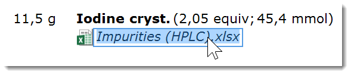
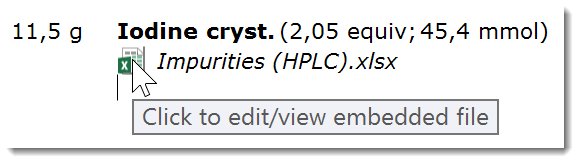
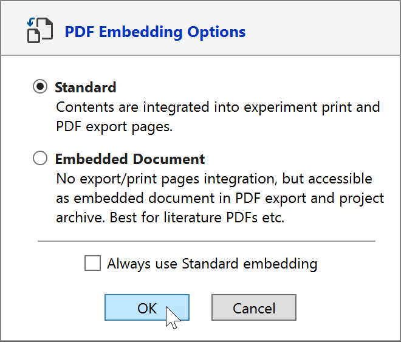
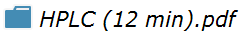

8) Add Files
Embed Documents and Files
In addition to image files (see previous section), also any other kind of files can be embedded, including PDF, MS Office documents, spectra files, etc. They either can be added via Drag/Drop or by using the 'Other' button of the section toolbar, the size limit is 10 MB. After initial embedding, they can be re-opened by their native applications for viewing and/or updating.
So let's drag/drop an e.g. an Excel file into the desired location of the experiment protocol:

The title of the embedded document be edited by clicking its label. No matter what the changes are, the file appendix (.xlsx in this case) will always be retained by the application.

To view or edit an embedded file, single-click its Icon (not the title). If present on your machine, the file's default application will launch and open it. If the parent application is not present, an option to save the file to a desired location is offered.

Please note that documents also can be embedded on the project level, rather than the experiment level.
|
Important Embedding a document places an independent copy of it into the ELN, not a link to the original. |
When embedding PDF documents, a dialog offering two embedding options appears. These specify how the document will be handled when its parent experiment is printed or saved to PDF:

The Standard option is the default one: It appends all pages of the embedded PDF document to the experiment content when printing or exporting to PDF. While this highly useful e.g. for analytical data, this may be less than ideal for third party content, e.g. a PDF article which was added as literature reference. In such cases, Embedded Document is the option of choice since it will ignore the contents of the embedded PDF file when printing or exporting to PDF. The table below summarizes the differences between the two options:
|
|
Standard |
Doc Embedding |
|
Element Style |
 |
|
|
Open file from protocol |
Yes |
Yes |
|
Stored as PDF attachment |
No |
Yes |
|
Append pages to PDF and Print output |
Yes |
No |
Document Editing
While editing an embedded document, its contents are only updated in the ELN protocol whenever the file is saved in its parent application.Exception: The contents of finalized experiments are never updated.
|
Important When editing an embedded document, don't apply 'Save As ...' within the parent application, otherwise changes are no more updated during the current edit session. - Reason: For editing, the document is created inside and opened from a special temporary folder designed to keep track of changes to it in the background - modifying name or location of the file would break this update connection. |
Archival and Sharing Note
Since the default application for viewing and/or editing an embedded file must be present on the current machine for accessing its contents, it is good practice to convert the content of uncommon file formats into a PDF file for final embedding.
Next Step: Add a workflow section ...